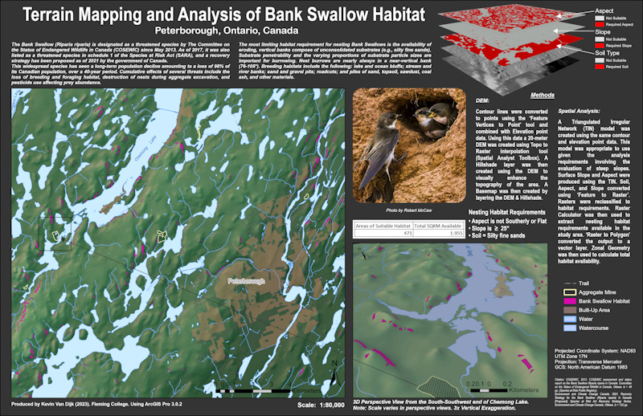

Terrain Mapping and Analysis of Bank Swallow Habitat

Peterborough, Ontario, Canada
DEM: Contour lines were converted to points using the 'Feature Vertices to Point' tool and combined with Elevation point data. Using this data a 20-meter DEM was created using Topo to Raster interpolation tool (Spatial Analyst Toolbox). A Hillshade layer was then created using the DEM to visually enhance the topography of the area. A Basemap was then created by layering the DEM & Hillshade.
Spatial Analysis: A Triangulated Irregular Network (TIN) model was created using the same contour and elevation point data. This model was appropriate to use given the analysis requirements involving the evaluation of steep slopes. Surface Slope and Aspect were produced using the TIN. Soil, Aspect, and Slope converted using ‘Feature to Raster’. Rasters were reclassified to habitat requirements. Raster Calculator was then used to extract nesting habitat requirements available in the study area. ‘Raster to Polygon’ converted the output to a vector layer. Zonal Geometry was then used to calculate total habitat availability.
Nesting Habitat Requirements:
- Aspect is not Southerly or Flat
- Slope is ≥ 25°
- Soil = Silty fine sands
Bank Swallow (Riparia riparia): The Bank Swallow (Riparia riparia) is designated as a threatened species by The Committee on the Status of Endangered Wildlife in Canada (COSEWIC) since May 2013. As of 2017, it was also listed as a threatened species in schedule 1 of the Species at Risk Act (SARA), and a recovery strategy has been proposed as of 2021 by the government of Canada.
This widespread species has seen a long-term population decline amounting to a loss of 98% of its Canadian population, over a 40-year period. Cumulative effects of several threats include the loss of breeding and foraging habitat, destruction of nests during aggregate excavation, and pesticide use affecting prey abundance. The most limiting habitat requirement for nesting Bank Swallows is the availability of eroding, vertical banks compose of unconsolidated substrates (e.g., silty fine sands). Substrate penetrability and the varying proportions of substrate particle sizes are important for burrowing. Nest burrows are nearly always in a near-vertical bank (76-105°). Breeding habitats include the following: lake and ocean bluffs; stream and river banks; sand and gravel pits; roadcuts; and piles of sand, topsoil, sawdust, coal ash, and other materials.
{kind=link}
{kind=link}